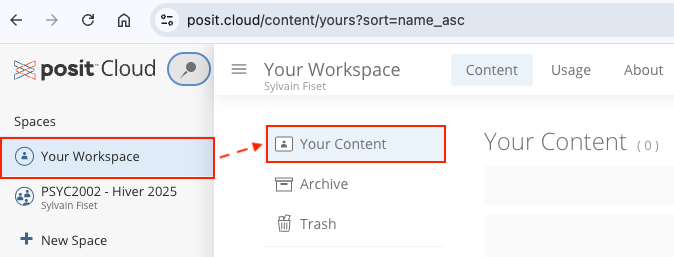
7 Posit Cloud
Dans ce chapitre, j’introduis l’application Posit Cloud. Posit Cloud est la version web de RStudio IDE. Elle permet :
- d’utiliser R, RStudio et Quarto directement dans votre navigateur web et ce, sans avoir à télécharger ces logiciels sur votre ordinateur
- de partager aisément des projets RStudio avec plusieurs utilisateurs
Si vous avez téléchargé avec succès les applications R, RStudio et Quarto sur votre ordinateur (et quelles fonctionnent correctement) et que vous n’envisagez pas de partager vos projets d’analyse avec quelqu’un d’autre (ce qui arrive rarement, soit dit en passant), vous pouvez sauter la lecture de ce chapitre.
Par ailleurs, dans le cadre d’un cours, il est fort possible que votre professeure ou professeur exige l’utilisation de Posit Cloud. Cela facile grandement le travail de la professeure ou du professeur puisque tous les projets d’un cours sont regroupés dans le compte du professeur. Dans ce cas, veuillez suivre la démarche de création d’un compte Posit Cloud (voir la Section 7.1).
De plus, bien que Posit Cloud s’apparente à la version locale1 de RStudio IDE, les premiers pas avec Posit Cloud peuvent s’avérer difficiles. Dans le présent chapitre, je soulève quelques éléments importants afin de maximiser l’expérience d’utilisation de Posit Cloud.
7.1 Création d’un compte
La première étape consiste à créer un compte gratuit (Free) sur le site web de Posit Cloud et cliquez sur GET STARTED (voir Figure 7.1).
Par ailleurs, notez que l’utilisateur atteint très rapidement les limites d’utilisation du plan gratuit de Posit Cloud — sauf si le compte s’inscrit à l’intérieur d’un cours. Dans l’optique où l’utilisateur (i) dépasse le nombre de projets ou d’espaces de travail admissibles, (ii) dépasse le nombre d’heures par projet disponibles, ou (iii) qu’il désire augmenter la mémoire RAM et la vitesse d’exécution des codes, le plan Premium de Posit Cloud s’avère une alternative intéressante, mais relativement dispendieuse2.
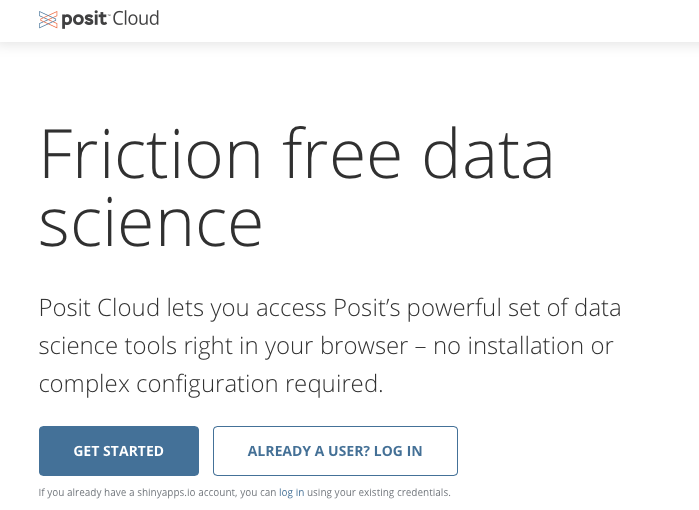
7.1.1 Compte gratuit
Voici la démarche à suivre pour créer un compte gratuit. Cette démarche est la même que le compte soit créé à titre personnel ou pour le cadre d’un cours.
Création d’un compte gratuit sur Posit Cloud
- Dans un premier temps, cliquez sur
All Plans.
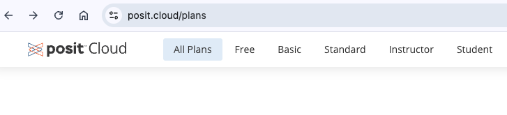
- Ensuite, cliquez sur
Free.
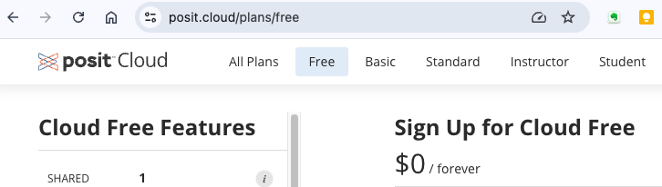
- Et finalement, indiquez votre adresse électronique — pour les étudiantes et étudiants qui suivent un cours spécifique en utilisant Posit Cloud, utilisez le couriel de votre université — et cliquez sur
sign up.
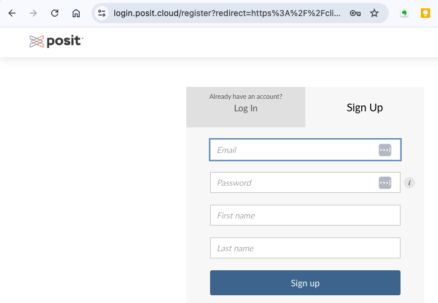
7.2 Compte Cloud Instructor
Dans le cadre d’un cours universitaire ou collégial, je recommande fortement l’utilisation d’un compte Cloud Instructor pour la professeure ou le professeur. Ce compte permet au professeur d’héberger tous les projets de ses étudiantes et étudiants dans un espace de travail (spaces) dédié à un cours spécifique. Le coût monétaire ($$$) — pour le professeur et les étudiante et étudiants — est très faible et facilite grandement le travail du professeur.
Le partage de projets RStudio (voir la Section 7.4) via un espace de travail partagé (voir la Section 7.3) peut se faire via une invitation individuelle ou via un lien de partage. De plus, la professeure ou le professeur peut créer des devoirs (assignments) qui sont copiés automatiquement lorsque l’étudiant ouvre le lien de partage. Les étudiantes et étudiants peuvent par la suite modifier le ou les fichiers qui se trouvent dans cet espace de travail et la professeure ou le professeur a accès en temps réel aux travaux individuels de chaque étudiante ou étudiant.
7.3 Espaces de travail
Posit Cloud possède la capacité de regrouper plusieurs projets RStudio à l’intérieur d’un même espace de travail. Dans Posit Cloud, ces environnements se nomment Spaces. Cette caractéristique permet :
- de regrouper tous vos projets RStudio associés au même thème (ex: un cours universitaire, une formation, une étude scientifique, etc.) à l’intérieur d’un même environnement
- de partager un espace de travail avec d’autres personnes, comme un professeur avec ses étudiants.
Afin d’atteindre ces objectifs, Posit Cloud divise l’espace de travail en deux catégories d’espace :
- les espaces de travail individuels
- les espaces de travail partagés3.
7.3.1 Espace individuel
L’espace de travail individuel (voir l’icone avec 1 personnage à l’intérieur) se trouve dans l’onglet Your Workspace sous l’en-tête Spaces à la gauche de Posit Cloud (voir Figure 7.5). Par défaut, les projets RStudio qui sont créés à l’intérieur de cet espace de travail individuel ne sont disponibles et visibles qu’à l’utilisateur du compte. Cependant, il est possible de rendre disponibles les projets de cet espace individuel afin qu’ils soient consultés et copiés par d’autres utilisateurs de Posit Cloud (si cela vous intéresse, veuillez cliquer ici).
Personnellement, j’utilise rarement l’espace de travail individuel. Je préfère regrouper mes projets RStudio à l’intérieur de thèmes spécifiques (cours, projets de recherche, etc.) à l’aide d’espace de travail partagé (voir Section 7.3.2). De plus, puisque l’utilité première de Posit Cloud est de favoriser le travail collaboratif, je ne discute pas plus longuement de l’espace de travail individuel. Je considère qu’une gestion responsable des espaces partagés permet d’obtenir le même niveau de confidentialité que l’espace de travail individuel.
7.3.2 Espaces partagés
Posit Cloud permet de regrouper et de partager avec d’autres utilisateurs des projets RStudio dans le même espace de travail. Les projets RStudio qui sont intégrés à l’intérieur d’un espace de travail partagé doivent obligatoirement avoir un thème commun. Par exemple, je peux regrouper les exercices d’un même cours dans un espace de travail partagé ou regrouper les projets associés à mes travaux de recherche sur une thématique spécifique. Bref, avant de créer un espace de travail partagé, il faut cibler le dénominateur commun aux projets qui y seront regroupés. Dans le cadre d’un cours, par exemple, un professeur peut créer un espace de travail partagé avec tous ces étudiants pour un exercice particulier. Cela lui permet d’avoir accès à tous les travaux effectués dans le cadre de cet exercice4.
Exemple - Espace de travail partagé
À titre d’exemple, la Figure 7.6 montre — voir la colonne de gauche — que j’ai créé un espace de travail partagé (voir l’icone avec 3 personnages à l’intérieur) du nom de PSYC2002 - Hiver 2025. Si désiré, je pourrais créer un nouvel espace de travail partagé en cliquant sur + New Space. Personnellement, tous mes espaces de travail dans Posit Cloud sont de nature partagée. Cette façon de faire me permet, si désiré, de rendre disponibles plusieurs projets à plusieurs personnes, et ce, très rapidement.
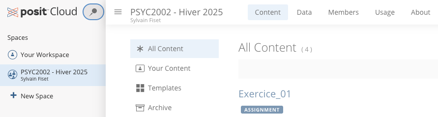
7.3.3 Partager un espace de travail dans Posit Cloud
L’un des avantages de Posit Cloud est la possibilité de partager des projets RStudio avec plusieurs utilisateurs sans avoir à télécharger le projet. Tous les utilisateurs ont accès à tous les projets d’un espace de travail via Posit Cloud. Par exemple, les membres d’une même équipe de recherche peuvent contribuer sur un même projet d’analyse statistique ou un étudiant peut partager son projet avec son professeur. Par ailleurs, il est important de noter que l’administrateur de l’espace de travail (ex : professeur) peut restreindre le nombre de projets partagés avec tel ou tel contributeur (ex: étudiant).
Exemple - Procédure de création d’un espace de travail partagé
Le partage d’un espace de travail dans Posit Cloud s’effectue à partir de l’espace de travail partagé (dans Spaces). Afin de partager votre espace de travail partagé, vous devez ajouter des membres. Sur la page d’ouverture de Posit Cloud, cliquez sur le nom de l’espace de travail que vous désirez partager. Au haut de l’écran, cliquez sur Members. La liste des membres de l’environnement de travail sera affichée (voir la Figure 7.7). Par la suite, cliquez sur l’option Add Member pour inviter de nouveaux membres. Lors de l’invitation, vous devrez fournir une adresse courriel et préciser le rôle du nouveau membre (Admin, Moderator, Contributor, Viewer). Par défaut, le choix Contributor est offert et, à moins de raisons valables, ce choix demeure la meilleure option. De plus, en tant qu’administrateur de cet environnement de travail, vous pouvez déterminer les privilèges que vous désirez accorder à chaque membre que vous invitez (voir l’encadré pointillé à la droite de la Figure 7.7).
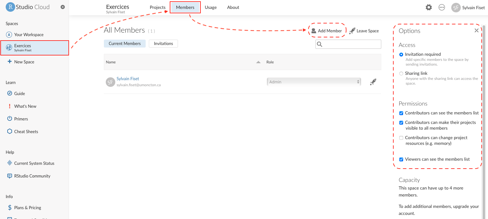
7.3.4 Effacer un espace de travail
Exemple - Effacer un espace de travail
Si vous désirez effacer un espace travail de votre compte Posit Cloud, cliquez sur le nom de votre espace de travail et ensuite cliquez sur l’icone avec les trois petits points à l’horizontal situé près de votre nom en haut à droite de la page web de Posit Cloud. Finalement, sélectionnez l’option Delete Sapce dans la bande déroulante (voir la Figure 7.8).
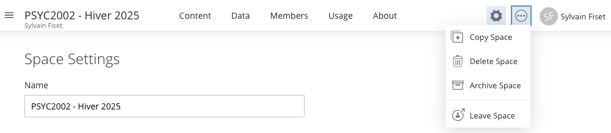
7.4 Projets
RStudio oblige l’utilisateur à créer un projet RStudio, ce qui, à mon avis, est une très bonne chose 5. À titre de rappel (voir le Chapitre 6), un projet RStudio permet de regrouper tous les fichiers (données, analyses, figures, etc.) liés à un projet d’analyse statistique.
7.4.1 Créer un nouveau projet
Exemple - Création d’un nouveau projet
Pour créer un nouveau projet, il suffit de cliquer sur la flèche (∨) de l’onglet New Project (voir à droite de la Figure 7.9) et, dans la bande déroulante, de sélectionner l’option New RStudio Project. Pendant quelques secondes, le message Deploying Project apparaît et, ensuite, votre nouveau projet s’ouvre dans Posit Cloud.
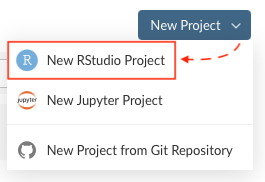
7.4.2 Gabarits (Templates)
Vous aurez probablement remarqué qu’il est possible de créer un nouveau projet à partir d’un gabarit (Template). Par défaut, quelques gabarits sont disponibles mais, honnêtement, ne perdez pas votre temps avec ces gabarits (s’ils sont disponibles). Il est préférable de construire son projet RStudio à partir d’un document neuf ou d’un projet que vous avez déjà utilisé.
Néanmoins, dans le cadre d’un cours, le professeur peut créer un gabarit qui sert de base pour la construction d’un exercice particulier, incluant les extensions R nécessaires à sa réalisation. Dans ce cas là, l’utilisation du gabarit est recommandée. Si cela se produit, le gabarit sera répliqué dans votre compte sur Posit Cloud et vous pourrez le modifier à volonté comme si c’était votre propre projet.
7.4.3 Devoirs (Assignments)
Dans le cadre d’un cours, un professeur peut créer un projet RStudio qui contient tous les fichiers (données, explications, solution) nécessaires à la réalisation d’un exercice — devoir — spécifique. Si le professeur produit un devoir (assignment) dans Posit Cloud, vous recevrez un lien par courriel (ou autre moyen de communication électronique utilisé par le professeur). Il suffit de cliquer sur le lien et d’ouvrir votre compte Posit Cloud.
Dans la page d’ouverture de l’espace de travail partagé avec votre professeur, vous verrez un projet avec un icone bleu du nom de Start (voir la Figure 7.10). Cliquez sur cette icone pour dupliquer le projet du professeur.
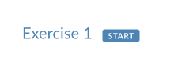
Exemple - Devoir partagé
Une fois que le projet du devoir est dupliqué, vous pouvez l’utiliser puisqu’il vous appartient. De plus, le professeur peut avoir accès à votre projet RStudio directement dans son propre compte et ce, en temps réel. Si vous quittez l’espace de travail partagé avec le projet, à votre retour, les projets dupliqués possèdent une icone Continue (voir la Figure 7.11). Il suffit de cliquez sur cet icone pour avoir accès à votre projet partagé avec votre professeur.
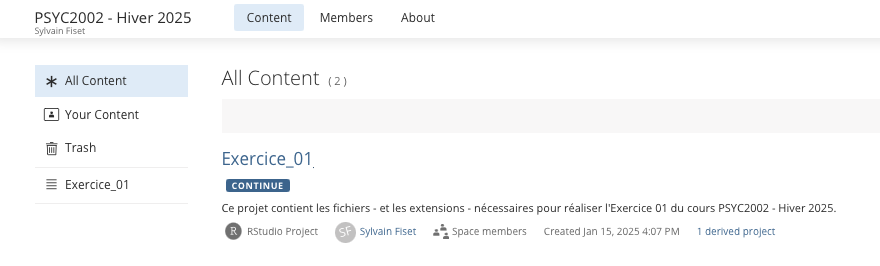
7.4.4 Renommer le nouveau projet
À l’ouverture d’un nouveau projet (voir Figure 7.12), Posit Cloud attribue le nom Untitled Project au nouveau projet. Le nom du projet est disponible tout au haut de l’écran et il est possible de voir dans quel espace de travail le projet est inséré. Dans la Figure 7.12, l’expression Exercices / indique que le nouveau projet est inséré à l’intérieur de l’espace de travail partagé nommé Exercices.
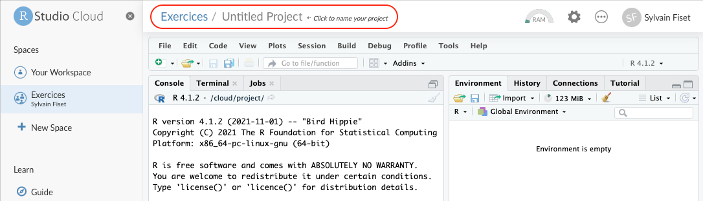
Exemple - Procédure de changement de nom
Pour changer le nom, il faut cliquer sur Untitled Project (en haut à gauche de la fenêtre) et inscrire le nouveau nom de votre projet (Figure 7.13). À titre de démonstration, j’ai créé un nouveau projet du nom de Exercice2.
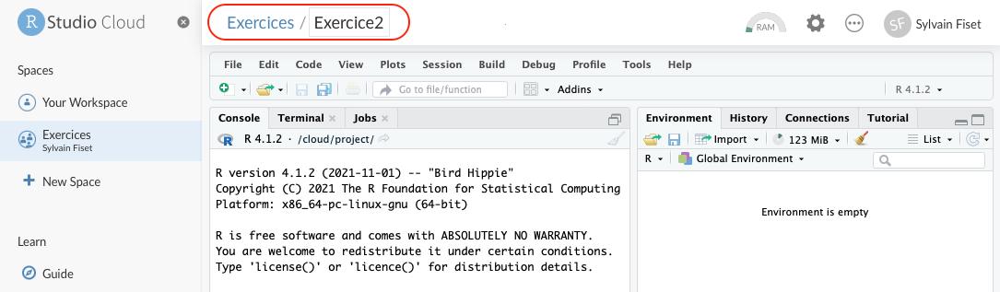
7.4.5 Importer des fichiers dans un projet
Habituellement, l’analyste importe un ou des fichiers de données (.xlsx, .dat, .txt, .csv, etc.) dans RStudio pour ensuite l’analyser à l’aide d’un script R ou d’un script R Markdown. Avec la version locale de RStudio IDE, l’analyste n’a qu’à copier son fichier dans le répertoire qui contient son projet RStudio. Avec Posit Cloud, l’approche est différente. À partir du projet RStudio, il faut importer le fichier de données dans l’espace cloud dédié à ce projet sur le serveur de RStudio.
Exemple - Importation de fichiers dans Posit Cloud
Voici un exemple. Dans la fenêtre Files de RStudio, nous pouvons voir que le projet RStudio (project.Rproj) est inséré dans le dossier Cloud > Project (voir Figure 7.14).
- Nous pouvons importer un fichier de données dans ce dossier en cliquant sur l’onglet
Upload. - Une fenêtre s’ouvre et il faut simplement cliquer sur
Choisir le fichiersous l’en-têteFile to upload. Dans mon exemple, le fichier que je désire importé se nommeRatLives.csv6. Il est possible d’importer plusieurs fichiers simultanément. Ceux-ci, cependant, doivent être regroupés, au préalable, à l’intérieur d’un fichier .zip. - Après l’importation, le fichier (
RatLives.csv) est disponible dans le projet Posit Cloud.
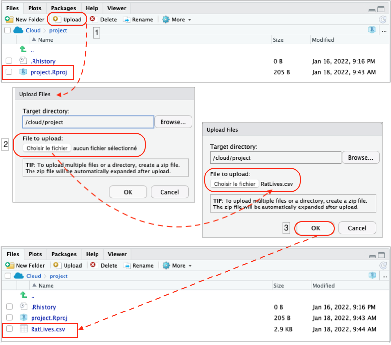
7.4.6 Examiner la liste des projets
Il est possible d’obtenir la liste de tous les projets d’un même espace de travail. Pour cela, il faut cliquer sur le nom de l’espace de travail que vous désirez consulter. Par défaut, l’onglet All Content est activé (Figure 7.11) et les projets disponibles dans l’espace de travail sont affichés. Pour ouvrir le projet qui vous intéresse, vous n’avez qu’à cliquer sur son nom.
7.4.7 Exporter un projet Posit Cloud
L’exportation d’un projet Posit Cloud sert principalement deux objectifs :
- L’exportation permet de sauvegarder une copie de votre projet sur votre ordinateur.
- L’exportation facilite grandement le partage des projets RStudio entre les utilisateurs7.
Exemple 1 - Exportation d’un projet RStudio à partir de la liste d’un espace de travail dans Posit Cloud
Lorsque la liste des projets d’un espace de travail de Posit Cloud est affichée à l’écran, vous pouvez facilement exporter l’un des projets sur votre ordinateur et le partager. Il suffit de cliquer sur l’option Export, laquelle est située à la l’extrême droite du nom du projet dans la liste (voir la flèche qui pointe vers le bas dans la Figure 7.15). Après avoir cliquer sur l’option Export, une première fenêtre s’ouvre et génère le dossier d’exportation du projet. Ensuite, une seconde fenêtre apparaît et il faut cliquer sur Download pour télécharger le dossier complet (voir la Figure 7.15).
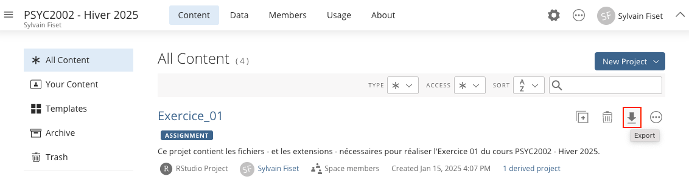
Par défaut, le projet est téléchargé dans le répertoire (ou dossier) de téléchargement de votre ordinateur. Il conserve exactement la même structure que votre dossier dans Posit Cloud. Vous pouvez donc l’ouvrir avec la version locale de RStudio IDE sur votre ordinateur et avoir accès à tous les fichiers. Prenez note que lors du téléchargement, le dossier de téléchargement se voit attribuer un nom arbitraire composé de 7 chiffres. Si vous téléchargez à plusieurs reprises le même projet, le nom à 7 chiffres demeure le même d’un téléchargement à l’autre.
Exemple 2 - Exportation d’un projet RStudio directement à partir du projet
Au lieu d’exporter le projet RStudio à partir de la liste des projets qui composent un espace de travail dans Posit Cloud, il est possible de l’exporter directement à partir du projet. Donc, une fois que le projet est ouvert dans RStudio, à partir de la fenêtre Files, il faut cocher la case située à la gauche du nuage Cloud > project. À ce moment, tous les fichiers sont cochés. Par la suite, il faut appuyer sur l’onglet More et choisir Export.... Par la suite, la démarche est semblable à celle de la ?fig-figexport.
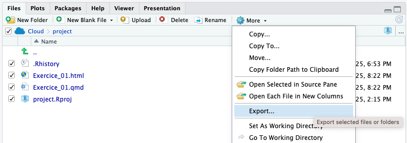
7.4.8 Partager un projet dans Posit Cloud
L’un des avantages de Posit Cloud est la possibilité de partager des projets RStudio avec plusieurs utilisateurs sans avoir à télécharger le projet. Tous les utilisateurs ont accès au même projet via Posit Cloud. Par exemple, les membres d’une même équipe de recherche peuvent contribuer sur un même projet d’analyse statistique ou un étudiant peut partager son projet avec son professeur.
Exemple - Partage d’un projet RStudio avec Posit Cloud
Le partage d’un projet Posit Cloud s’effectue à partir de la liste des projets qui composent un espace de travail. Il faut appuyer sur les trois points à l’horizontal situés à l’extrème droite du nom d’un projet dans la liste et de sélectionner l’option Share Link.
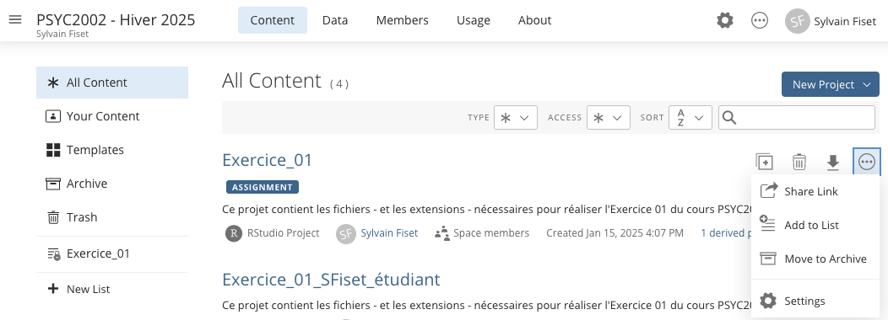
7.4.8.1 Accessibilité
Lors du partage d’un projet, vous pouvez restreindre l’accessibilité de votre projet. Ainsi, même si vous partagez un espace de travail avec 20 autres utilisateurs, vous pouvez limiter l’accès de votre projet aux administrateurs et aux modérateurs de l’environnement de travail.
Exemple - Accessibilité
- Pour vous assurez que cette option soit activée pour un projet en particulier, ouvrez l’espace de travail qui contient le projet auquel vous désirez restreindre l’accès. Cliquez sur les trois points à l’horizontal à l’extrême droite du nom du projet et sélectionnez
Settings(voir Figure 7.17).
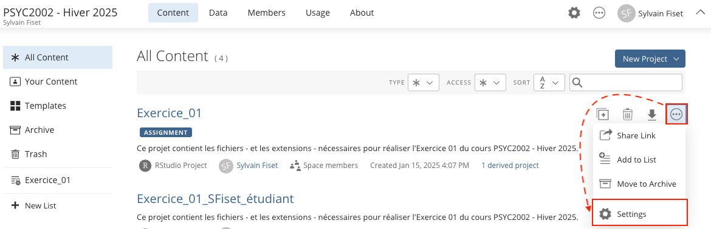
- Par la suite, cliquez sur
accesset sélectionner l’option désiré dans la bande déroulante sousGENERAL ACCESS(voir Figure 7.18).
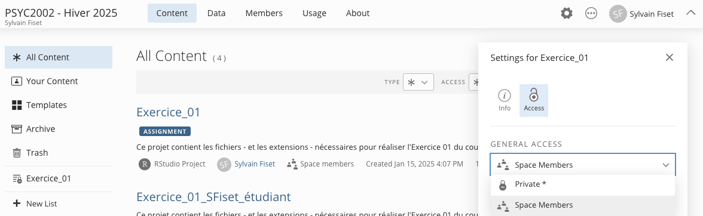
7.4.9 Effacer un projet
Si vous désirez effacer un projet de votre compte Posit Cloud, deux possibilités s’offrent à vous.
Exemple - Solution 1
- Dans la liste des projets associés à un espace de travail spécifique, cliquez sur la
poubellesituée à l’extrème droite du nom du projet (voir la Figure 7.19).
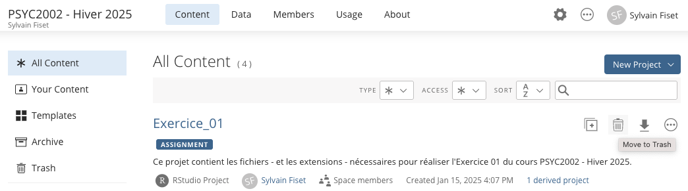
Exemple - Solution 2
- Lorsque le projet est déjà ouvert dans Posit Cloud, vous pouvez cliquer sur l’icone avec les trois petits points à l’horizontal situé près de votre nom en haut à droite de la page web de Posit Cloud. Ensuite, sélectionnez l’option
Move to Trashdans la bande déroulante (voir la Figure 7.20).
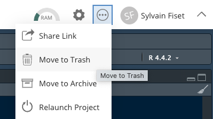
7.5 Options de Posit Cloud
Tout comme la version locale de RStudio IDE, tel que montré à la Chapitre 5, il est possible de modifier les options de Posit Cloud. Prenez note, cependant, qu’il faut modifier les options pour chacun des projets que vous créez — ce qui n’est pas le cas avec la version locale de RStudio. Cela est nécessaire puisque pour chaque projet, Posit Cloud produit un espace de travail dans lequel les projets sont tous indépendants les uns des autres.
7.6 Consulter votre compte
Exemple - Consulter votre compte
Vous pouvez consulter les paramètres d’utilisation de votre compte Posit Cloud en cliquant sur votre nom. Vous y verrez quelques statistiques, comme le nombre de projets et le nombre d’heures d’utilisation pour un mois (voir la Figure 7.21). Cela est particulièrement important si votre compte d’utilisateur est gratuit.
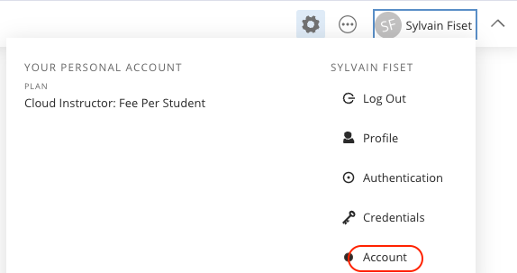
7.7 Quitter Posit Cloud
Pour quitter Posit Cloud, n’oubliez pas de cliquez l’option Log Out après avoir cliquer sur votre nom (voir la Figure 7.21).
L’expression
version localedésigne la version de RStudio téléchargée et installée sur un ordinateur (et non dans le nuage, comme Posit Cloud).↩︎Cela est d’autant plus vrai que la version locale de RStudio IDE est, elle, disponible gratuitement.↩︎
Les espaces de travail individuels sont illustrés par une icone avec une personne et les espaces de travail partagés sont illustrés par des icones avec trois personnes.↩︎
Posit Cloud a d’ailleurs été conçu, en partie, pour répondre à ce besoin lors de l’enseignement de R et de RStudio.↩︎
Si vous n’êtes pas familier avec les projets RStudio, je vous invite à consulter la Chapitre 6.↩︎
Ce fichier provient des fichiers de données qui accompagnent le livre de John Kruschke, Doing Bayesian Data Analysis.↩︎
Si vous ne désirez pas utiliser la fonction
sharede Posit Cloud.↩︎